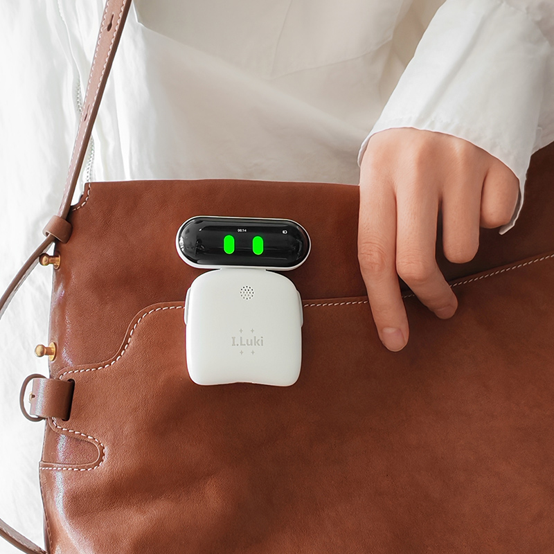

市场格局：华强北AI产业化变革全景
从"买硬件参数"到"买智能体验"的消费逻辑跃迁
华强北作为中国电子消费市场的"晴雨表"与风向标，正在经历深刻的AI产业化变革。传统堆满手机壳、充电宝等配件的"一米柜台"，正快速被AI眼镜、AI翻译机、AI玩具及各类AI机器人等新品类所替代。监测数据显示，华强北在售品类中，AI产品的销量占比已从2023年的12%急剧跃升至2026年的41%。
核心洞察：消费逻辑的根本性转变
电子市场正从"买硬件参数"过渡到"买智能体验"的新阶段。这一转变不仅体现在品类更替上，更深层地反映了用户对AI产品价值认知的成熟——从关注芯片算力、内存容量等硬指标，转向关注AI能否提供持续的、个性化的、有情感温度的交互体验。

图1-3：华强北AI硬件全生命周期供应链响应速度（vs 传统模式）
华强北全生命周期服务体系推动工业逻辑实现"上午设计、下午打样、次日量产、一周出海"的极致效率。从设计到出海总计仅需152小时（约6.3天），较传统模式的30天提升了4.7倍效率，构成了全球AI硬件产业无可比拟的供应链护城河。
「AI八骏」榜单：品类迭代与市场成效
基于实际销售数据、增长速度、AI含量及用户口碑的加权系统分析
为了给全球采购商提供明确的选品指引，华强北街道及评委会联合发布了"华强北AI八骏"热销榜单，形成了"数据采集—市场验证—榜单发布—产品反哺"的良性闭环。

图2-1：「华强北AI八骏」品类更迭矩阵（第一批 vs 第二批）
| 榜单批次 | 核心覆盖品类 | 典型代表产品 | 核心市场成效 |
|---|---|---|---|
| 第一批 | 无人机、机器人、AI眼镜、AI玩具、AI手表、AI翻译机、AI学习机、AI音响 | 禄马等代表性AI硬件 | 全域营收增长35%，相关品类营收增长55%，AI玩具大涨200%，AI眼镜增长80% |
| 第二批 | AI眼镜、AI机器人、无人机、AI摄像头、AI耳机、AI相机、AI乐器、AI学习机 | 乐奇Rv101 AI眼镜、AI悟空陪伴机器人、悦鑫宇T60 PRO无人机、迪信通Magic S1移动监控机器人、VIAKING VAI001蓝牙翻译耳机、欧达M5口袋相机、乐旭智能吉他、智学通Z1学习机 | 呈现"四款新晋、四款蝉联"的更迭机制，全生命周期服务体系推动工业逻辑实现极致响应 |
品类更迭信号解读
- 蝉联品类（AI眼镜、AI机器人、无人机、AI学习机）：验证了这些品类的市场刚需属性和持续成长性
- 新晋品类（AI摄像头、AI耳机、AI相机、AI乐器）：反映了AI能力向更细分、更垂直场景渗透的趋势
- 退出品类（AI手表、AI音响）：可能因市场趋于饱和或产品同质化严重而被替代
核心场景：教育陪伴与潮玩机器人趋势
从STEM教育到情绪消费的底层逻辑重构
3.1 教育陪伴机器人

优必选侦查坦克编程机器人
通过积木拼装激发儿童动手能力与想象力，结合编程与玩乐，引导儿童走向STEM教育。丰富的互动设计让每次玩耍都充满新鲜感。

元萝卜下棋机器人
"用眼睛看→用大脑想→用手来下"的闭环控制系统。采用4自由度消费级精密机械臂，实现毫米级手眼协同定位精度。

Luki AI迷你机器人
60克超轻可穿戴配饰化机器人，提供绝对安全的语言沙盒。消解评价焦虑，自适应语言支架，根据孩子水平动态调整语料库。
3.2 AI喵精灵：形态分类与市场策略
| 形态分类 | 造型特征 | 目标市场 | 用户受众 | 核心卖点 |
|---|---|---|---|---|
| 高饱和度彩色毛绒 | 粉蓝/亮紫/彩虹色外星怪兽、怪萌精灵造型 | 欧美（亚马逊/TikTok Shop）、东南亚 | 儿童、K12学生、潮玩盲盒收集者 | 视觉吸睛与高转化率；低成本的科技陪伴（国外昂贵智能玩具的降维平替） |
| 低饱和度陪伴感毛绒 | 高仿真机器猫/熊猫、低饱和度色系疗愈玩偶 | 日本、西欧、国内一线城市 | 高端银发族、独居青年、不便养活体宠物的家庭 | 触觉驱动的疗愈；利用陀螺仪与隐藏式触觉传感器实现拟真物理反馈 |
3.3 潮玩机器人：IP经济与平台化逻辑

Eiliko随行机器人
创新"智慧换装"设计，头部固定AI核心，身体为盲盒组件。外壳内嵌芯片实现软硬件联动，换装即"灵魂洗牌"。仅约70克，支持随身配饰携带。
雷格斯（RAGUS）
废旧CRT电视机头部改造的工业复古美学。独树一帜的"怼人"人格，精准回怼用户的日常指令，成为年轻人的"解压神器"和真实"损友"。

乐森迷你机器人
"一个底座，万千角色"的平台化逻辑。共享底座+低成本公仔，与《蜡笔小新》《樱桃小丸子》、迪士尼等顶级IP正版联名，打破静态手办局限。
潮玩机器人商业模式洞察
乐森的"底座+皮肤"模式代表了消费级AI机器人的重要商业创新：
- 对用户：收集门槛从2000元/个降至底座一次投入+低单价公仔，极大扩展了IP粉丝的消费半径
- 对IP方：硬件底座标准化，IP方仅需提供3D造型和配音数据即可快速升级为"AI具身智能"
- 对厂商：通过底座锁定用户生态，公仔成为高复购率的耗材型产品
交互痛点：物理/语音/商业三维诊断
消费级AI机器人交互心智模型尚未形成的系统性分析
关键发现：六大维度全面落后
当前行业平均表现与用户期望之间存在显著鸿沟。尤其在情感持续性和形态-功能匹配度两个维度，差距最为突出。这表明行业在"让机器人看起来像朋友"方面投入了大量设计资源，但在"让机器人真正成为朋友"的体验深度上严重不足。

图4-2：AI机器人交互痛点优先级矩阵（P0=立即解决 / P1=高优先级 / P2=规划解决）
🔧 物理交互痛点
- 功能形式不匹配：用户面对毛绒形态的天然抚慰直觉（拍打、抚摸）与仅内置6轴陀螺仪的硬核传感逻辑冲突，需通过摇晃/颠倒等非直觉动作触发反馈
- 静态触点隐藏性：物理微动开关缺乏视觉或触觉交互引导（Signifiers），用户在盲触状态下难以精准找到触点
- 形态预期误导：体型较大、带轮轴底盘和机械双臂的机器人外表极具具身智能欺骗性，实际却不支持语音对齐或高级交互
🎙️ 语音交互痛点
- 初次引导缺失：用户需翻找说明书寻找隐藏的多功能对话按键，缺乏清晰的动效或声音提示
- 多模态吞吐失衡：麦克风与喇叭间距过近导致出入音设计不成熟；TTS内容冗长教条，缺乏自然停顿与节奏
- 探索反馈不透明：用户尝试捏鼻子、拉耳朵等拟人化探索时，反馈机制极不透明，探索多以失败告终
💼 商业落地痛点
- 连接故障无提示：弱网环境下云端AI断连或无响应，缺乏透明的进度条或状态提示
- 新鲜感快速消退：互动模式单一（本质仍是"一问一答"智能音箱），缺乏未知感与成长轨迹，沦为桌面吃灰摆件
战略洞察与行为建议
基于数据与痛点的系统性策略框架
建议一：构建"形态-交互-情感"三位一致性模型
- 形态决定交互范式：毛绒形态必须支持拍打、抚摸、捏揉等直觉化物理交互，而非仅依赖摇晃/颠倒。建议在成本可控前提下引入电容式触摸传感器阵列替代单一陀螺仪方案
- 交互引导显性化：所有可交互触点需具备视觉标识（LED灯环）或触觉纹理（凸点/凹陷），消除用户盲触焦虑
- 功能诚实原则：产品外观不应过度暗示超出实际能力的功能。轮轴底盘+机械臂的"高形态"产品必须配套语音对齐和基础运动能力
建议二：重构语音交互的"第一分钟体验"
- 零说明书 onboarding：首次开机即通过动画引导+语音播报告知用户所有交互方式，将"找按键"的挫败感转化为"发现彩蛋"的惊喜感
- 对话节奏优化：TTS输出应引入自然停顿、语气词和情感标记，将平均回复长度控制在3-4句话以内，支持用户随时打断
- 探索反馈可视化：建立"交互-反馈"映射表，用户每尝试一种新交互方式（如捏鼻子、拉耳朵），机器人需给出明确的动画/声音/震动反馈
建议三：从"一问一答"到"情感成长曲线"
- 记忆与进化系统：建立长短期记忆机制，记录用户偏好、对话历史、互动频率，让机器人表现出"越来越懂你"的成长感
- 多模态情感表达：结合屏幕像素动画、舵机动作、LED光效、TTS语调变化，构建丰富的情感表达矩阵，避免单一对话模式
- 离线能力保底：针对弱网场景设计本地化的基础交互能力（如本地故事播放、基础动作反馈），确保"断网不断联"的情感连续性
建议四：供应链与产品策略协同优化
- 平台化底座战略：借鉴乐森模式，将核心算力、通信、语音模块集成于标准化底座，通过低成本"皮肤/公仔"实现IP快速适配和用户复购
- 区域化形态定制：欧美市场主推高饱和度彩色毛绒（TikTok Shop视觉优先），日本/西欧主推低饱和度疗愈形态（触觉驱动），实现"一底座多市场"
- 盲盒化情感连接：引入Eiliko式的"换装=换灵魂"机制，通过硬件芯片联动软件人格，创造持续的新鲜感和收集驱动力
总结性洞察
华强北AI硬件市场的崛起，本质上是"供应链效率 × AI能力下沉 × 情绪消费升级"的三重共振。然而，当前消费级AI机器人面临的核心挑战并非技术能力不足，而是"交互心智模型"的缺失——用户不知道该如何与机器人建立关系，机器人也不知道如何回应用户的情感期待。
未来的竞争焦点将从"谁的技术更先进"转向"谁能让用户与AI建立更深、更持久的情感羁绊"。这要求厂商在硬件设计、交互设计、AI人格设计三个层面实现系统性协同，而非简单的技术堆砌。